Project 02: Fun with Filters and Frequencies!
Vanessa Lin
Overview
I have created these images below by playing around with filters and frequencies, enjoy!1. Fun with Filters
1.1

cameraman.png image, through using derivatives in the x and y directions, a gradient magnitude image and edge image was created. First, I convolved the original image with [[1, -1]] for the partial derivative in x and then, convolved the original image with [[1][-1]] for the partial derivative in y. The gradient image was sproduced by squaring the partial derivatives of x and y, adding the squared partial derivatives together, and then square rooting the sum. The edge image was created by binarizing the gradient magnitude image based on a certain threshold, which I defined as 0.15.

1.2
In the edge image produced in part 1.1, we can see that the results were particularly noisy, so in this part, I will be using a Gaussian filter to hopefully get a better edge image. I used a Gaussian filter of size 15 by 15 with sigma value of 1.5. First, I convolved the original image with this Gaussian filter to get a blurrier/smoothed version of the originalcameraman.png image. Afterwards I convolved the partial derivatives in x and y like before and produced this edge image with a threshold of 0.17:
1.3
Here, using the gradient and edge detection filters from 1.1 and 1.2, I created an automated image straightening function. In the function, there is a set of 18 angles from -14 to 14 and for each angle in the set, I rotate the original image by that angle. After the rotation, I crop out the center of the rotated image to remove the black artifacts, and then I use the Gaussian derivatives and convolve them with the cropped image to get the derivative of each pixel in the x and y directions. Using the gradient direction formula which isnp.arctan2(dy, dx), I found the gradient angle of each pixel, obtaining a list of gradient angles, and created a histogram from that list. I counted the number of angles that were in the 89 to 90 (and -89 to -90) bucket and the 0 to 1 (and 0 to -1) bucket, because those angles are the vertical and horizontal edges that we want to straighten the image. I then kept track of the angle that had the maximum number of angles, which were vertical/horizontal edges, and returned the angle.
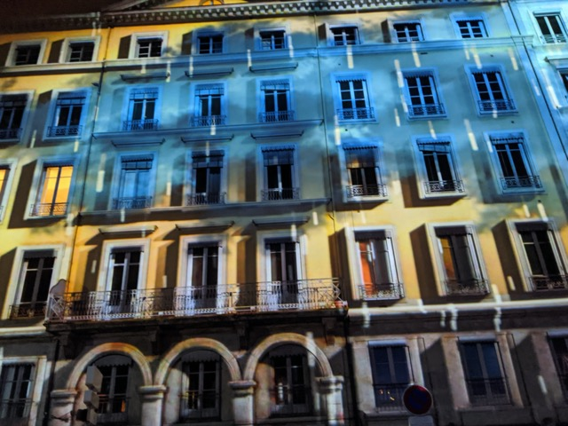
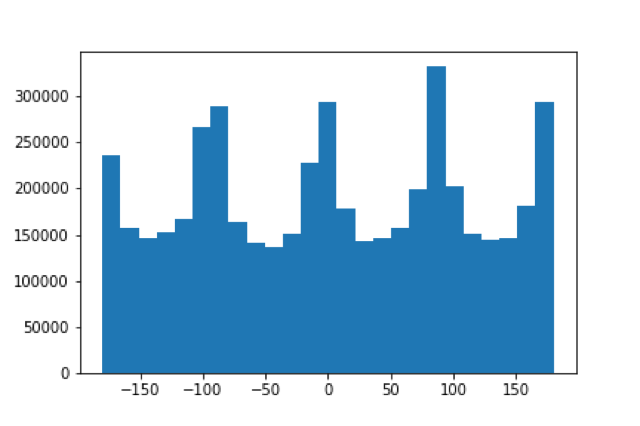
orientation histogram of original facade
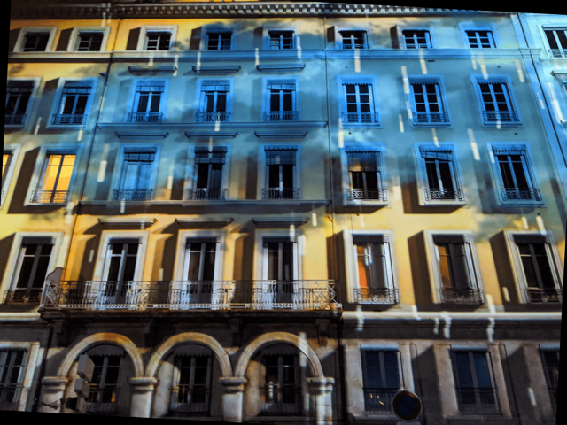
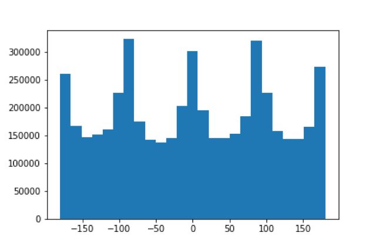
orientation histogram of straightened facade
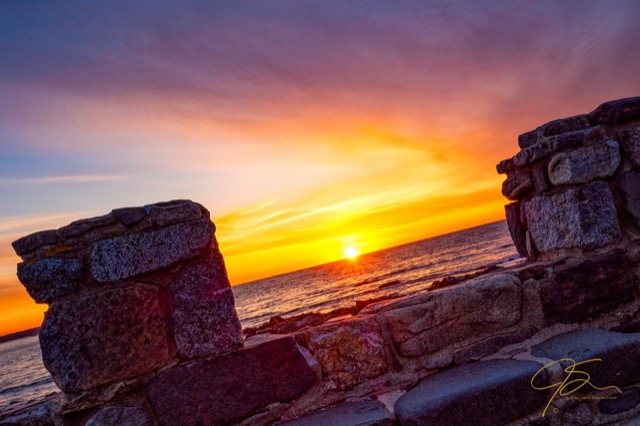
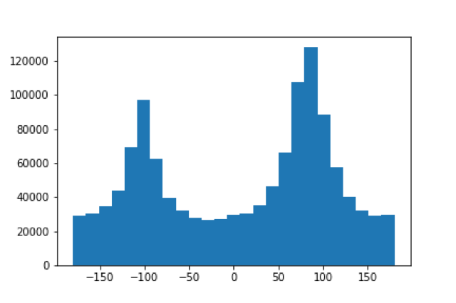
orientation histogram of original sunrise
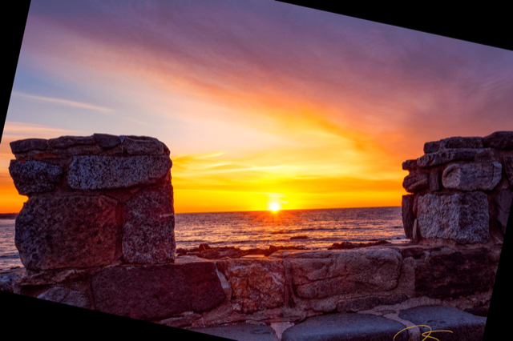
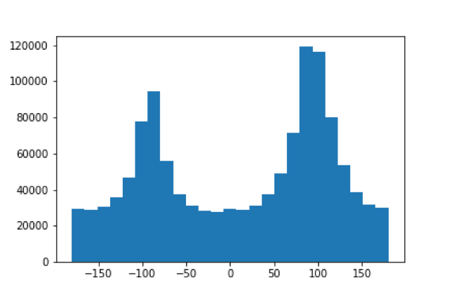
orientation histogram of straightened sunrise
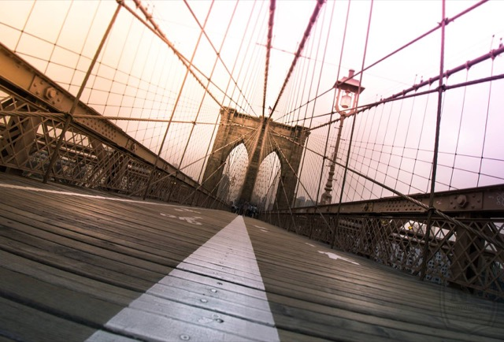
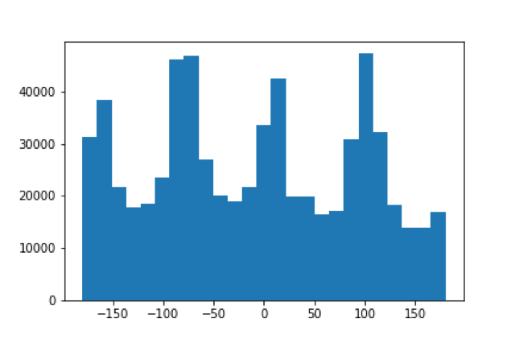
orientation histogram of original brooklyn bridge
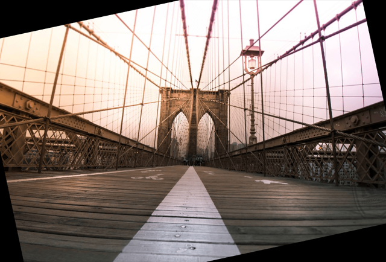
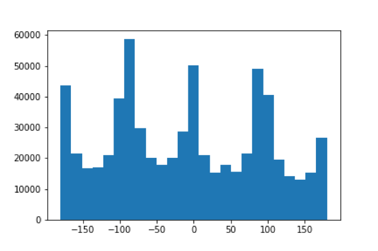
orientation histogram of straightened brooklyn bridge
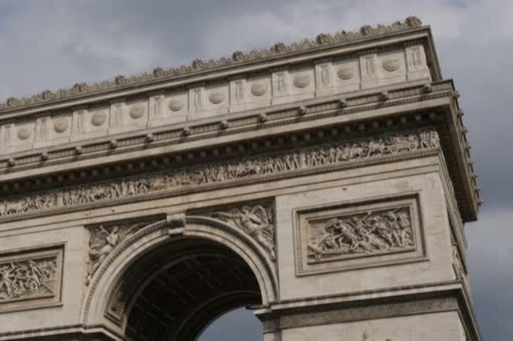
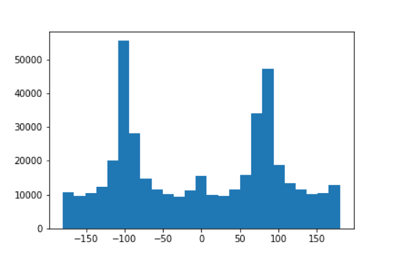
orientation histogram of original triomphe
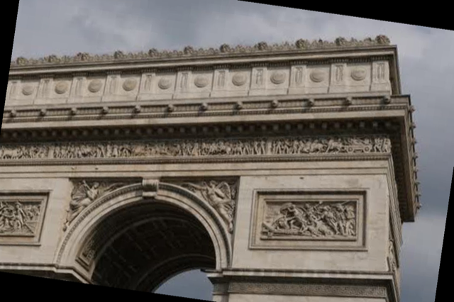
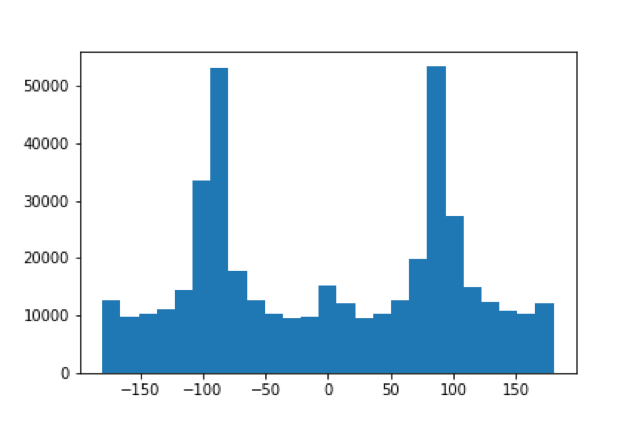
orientation histogram of straightened triomphe
2. Fun with Frequencies
2.1
To create sharpened images, I convolved the image with a Gaussian to get a blurred version of the image. Afterwards, I subtracted the blurred image from the original and got the high frequencies of the image, which I then added to the original image to create a more sharpened image. For the single convolution operation, I made an unmask filter through(1+alpha)*unit_impulse - alpha*gaussian. I used an alpha of 1 for these images.
baby.jpg and audrey.jpg, the sharpening algorithm appears to add more color to the final sharpened images, or at least the algorithm adds more information, which is not necessarily good if you want to keep the original colors. However this extra color helps add the details that were not as easily seen before in the original images, like for the baby you can see the eyebrows more clearly than before and the outline of his face is more defined. Here is an evaluation of a sharp image, using an alpha of 1:
2.2
For this part, I created hybrid images through aligning images based on certain features, like eyes and face, and then I found the high frequencies of one image and the low frequencies of the other image and then combined the frequencies together to create a hybrid image result. I used the code alignment code given to us to align the images. For the combination of Park Seo Joon and IU hybrid, I used a gaussian filter of 30x30 with sigma 5 for IU and sigma 7 for Park Seo Joon.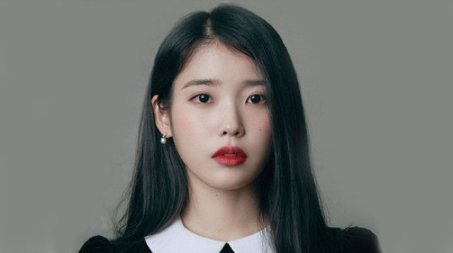
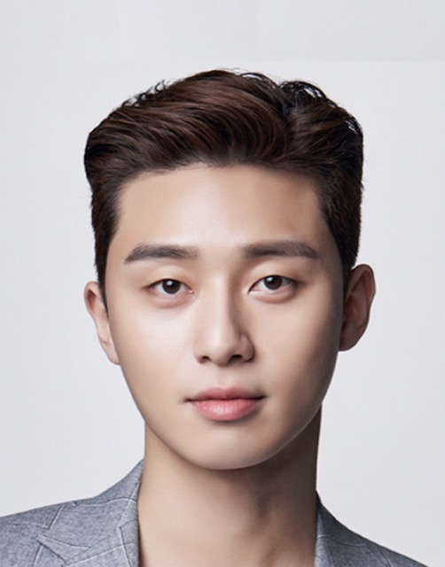
image of Park Seo Joon
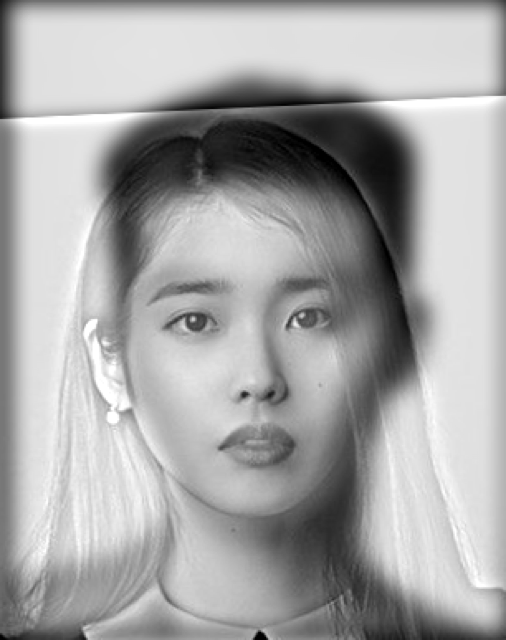
hybrid image of IU and Park Seo Joon
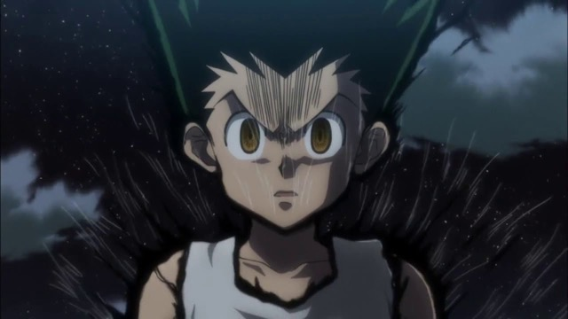
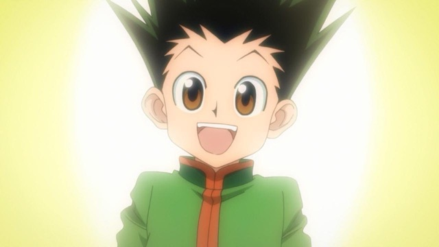
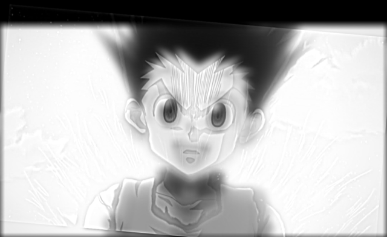
hybrid image of the Gons

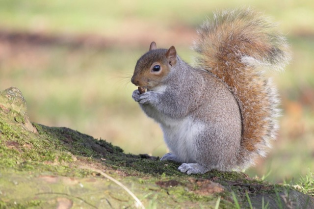
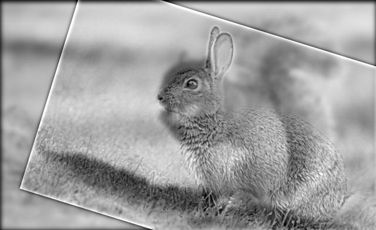
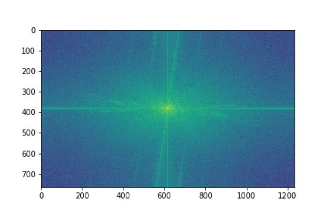
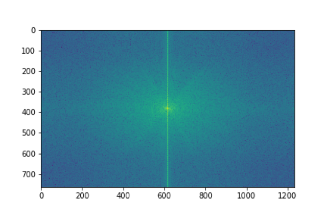
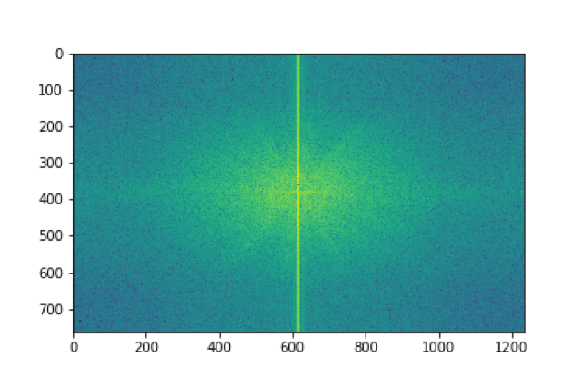
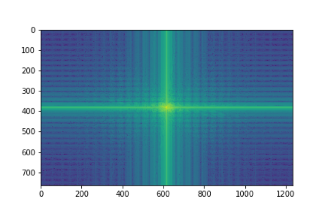
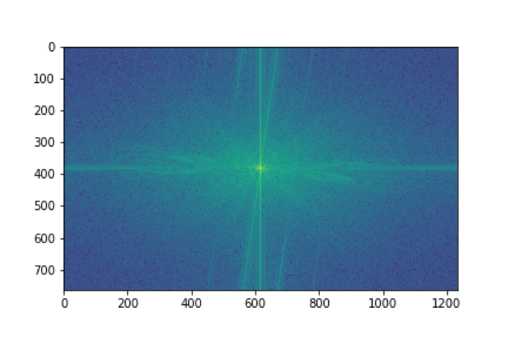
2.3
Here, I produced Gaussian and Laplacian stacks. For the Gaussian stack, I applied a Gaussian filter of size 30x30 with sigma of 3 over the previous image with the first image of the stack being the original image. For the Laplacian stack, I subtracted the Gaussian image of the next index from the current index to get the current Laplacian level until the last level where I just took the Gaussian image of that current index. Here are the Gaussian stack and Laplacian stack of the Salvador Dali painting of Lincoln and Gala.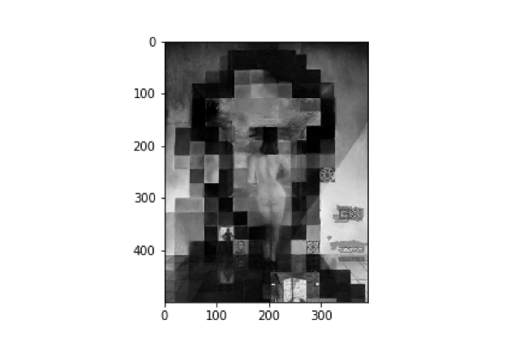
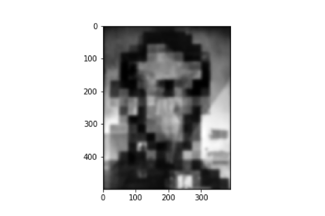
2.4
For multiresolution blending, using the Gaussian stack and Laplacian stack functions from before, I found the Laplacian stack of both the images that we want to blend and the Gaussian stack of the mask. For each level of the stack, I multiply themask with the left image at that level and then multiply 1 - mask with the right image of that level (may not necessarily be left or right depends on what mask you are using). Afterwards, I add the products together and add to the previous sum of masks and Laplacian images. At the end, we get a multiresolution blend between the images.